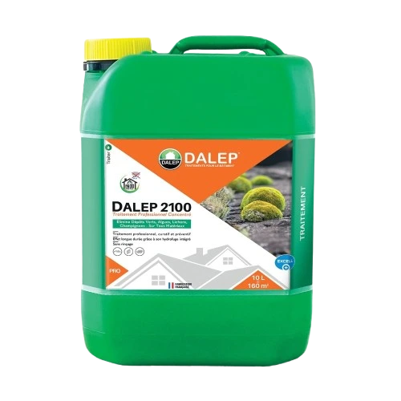

Reparation toiture : La réparation de toiture est indispensable pour prévenir les fuites et protéger votre maison des intempéries. Qu'il s'agisse de remplacer des tuiles endommagées, de colmater une fuite ou de réparer des éléments usés, une intervention rapide est cruciale pour maintenir l'étanchéité et l'isolation de votre toit. Nos experts interviennent sur tous types de toitures, en assurant des réparations solides et durables.
(pas de spam)
NOS SERVICES
La réparation de toiture est indispensable pour prévenir les fuites et protéger votre maison des intempéries. Qu'il s'agisse de remplacer des tuiles endommagées, de colmater une fuite ou de réparer des éléments usés, une intervention rapide est cruciale pour maintenir l'étanchéité et l'isolation de votre toit. Nos experts interviennent sur tous types de toitures, en assurant des réparations solides et durables.
EN SAVOIR PLUS
Le nettoyage et le démoussage de toiture sont essentiels pour préserver l'apparence et la durabilité de votre toit. Avec le temps, des mousses, lichens et algues peuvent s'accumuler, entraînant des risques de détérioration et de fuites. Un entretien régulier assure non seulement une toiture plus esthétique, mais prolonge également sa durée de vie.
EN SAVOIR PLUSL'isolation de toiture est cruciale pour améliorer le confort thermique de votre maison et réduire vos factures d'énergie. Une bonne isolation empêche les pertes de chaleur en hiver et garde la fraîcheur en été. Elle contribue également à une meilleure régulation de la température intérieure et à la réduction des bruits extérieurs.
EN SAVOIR PLUSL'étanchéité de toiture est essentielle pour protéger votre maison des infiltrations d'eau et des dommages associés. Une toiture étanche empêche les fuites et assure une protection efficace contre les intempéries. Les matériaux et techniques utilisés doivent être adaptés à votre type de toit pour garantir une étanchéité durable.
EN SAVOIR PLUSLa peinture de toiture est une solution efficace pour revitaliser l'apparence de votre toit et améliorer sa protection contre les éléments. En plus d'embellir votre maison, une peinture spécialement conçue pour les toitures offre une protection contre les UV, l'humidité et les agressions climatiques. Elle aide également à prévenir la détérioration prématurée et prolonge la durée de vie de votre toiture.
EN SAVOIR PLUSLa pose de gouttière est fondamentale pour une gestion efficace des eaux pluviales et pour protéger les façades et les fondations de votre maison. Une gouttière bien installée dirige l'eau de pluie loin de votre toiture et de vos murs, prévenant ainsi les risques d'infiltration et d'endommagement.
EN SAVOIR PLUSLa pose de fenêtres de toit Velux améliore la luminosité et la ventilation de vos espaces sous comble tout en ajoutant une touche esthétique à votre toiture. Ces fenêtres permettent d'optimiser l'éclairage naturel et offrent une meilleure régulation de la température intérieure. Une installation correcte est cruciale pour assurer une étanchéité parfaite et éviter les fuites.
EN SAVOIR PLUSLa pose de fenêtres de toit Velux améliore la luminosité et la ventilation de vos espaces sous comble tout en ajoutant une touche esthétique à votre toiture. Ces fenêtres permettent d'optimiser l'éclairage naturel et offrent une meilleure régulation de la température intérieure. Une installation correcte est cruciale pour assurer une étanchéité parfaite et éviter les fuites.
EN SAVOIR PLUS
En cas de fuite de toiture, il est impératif d'agir rapidement pour éviter des dégâts importants. Les couvreurs spécialisés en urgence interviennent rapidement pour localiser et réparer la fuite, assurant ainsi une protection immédiate contre les infiltrations d'eau. Leur expertise permet de traiter efficacement les problèmes, qu'il s'agisse de tuiles endommagées, de joints défectueux ou d'autres issues. Ne laissez pas une fuite de toiture compromettre la sécurité et le confort de votre habitation.
EN SAVOIR PLUSNettoyage Demoussage toiture : Le nettoyage et le démoussage de toiture sont essentiels pour préserver l'apparence et la durabilité de votre toit. Avec le temps, des mousses, lichens et algues peuvent s'accumuler, entraînant des risques de détérioration et de fuites. Un entretien régulier assure non seulement une toiture plus esthétique, mais prolonge également sa durée de vie.
Isolation toiture : L'isolation de toiture est cruciale pour améliorer le confort thermique de votre maison et réduire vos factures d'énergie. Une bonne isolation empêche les pertes de chaleur en hiver et garde la fraîcheur en été. Elle contribue également à une meilleure régulation de la température intérieure et à la réduction des bruits extérieurs.
Etanchéité toiture : L'étanchéité de toiture est essentielle pour protéger votre maison des infiltrations d'eau et des dommages associés. Une toiture étanche empêche les fuites et assure une protection efficace contre les intempéries. Les matériaux et techniques utilisés doivent être adaptés à votre type de toit pour garantir une étanchéité durable.
Peinture toiture : La peinture de toiture est une solution efficace pour revitaliser l'apparence de votre toit et améliorer sa protection contre les éléments. En plus d'embellir votre maison, une peinture spécialement conçue pour les toitures offre une protection contre les UV, l'humidité et les agressions climatiques. Elle aide également à prévenir la détérioration prématurée et prolonge la durée de vie de votre toiture.
Pose de gouttière : La pose de gouttière est fondamentale pour une gestion efficace des eaux pluviales et pour protéger les façades et les fondations de votre maison. Une gouttière bien installée dirige l'eau de pluie loin de votre toiture et de vos murs, prévenant ainsi les risques d'infiltration et d'endommagement.
Pose fenêtres de toit : La pose de fenêtres de toit Velux améliore la luminosité et la ventilation de vos espaces sous comble tout en ajoutant une touche esthétique à votre toiture. Ces fenêtres permettent d'optimiser l'éclairage naturel et offrent une meilleure régulation de la température intérieure. Une installation correcte est cruciale pour assurer une étanchéité parfaite et éviter les fuites.
Fuite toiture : En cas de fuite de toiture, il est impératif d'agir rapidement pour éviter des dégâts importants. Les couvreurs spécialisés en urgence interviennent rapidement pour localiser et réparer la fuite, assurant ainsi une protection immédiate contre les infiltrations d'eau. Leur expertise permet de traiter efficacement les problèmes, qu'il s'agisse de tuiles endommagées, de joints défectueux ou d'autres issues. Ne laissez pas une fuite de toiture compromettre la sécurité et le confort de votre habitation.
Pose fenêtres de toit : La pose de fenêtres de toit Velux améliore la luminosité et la ventilation de vos espaces sous comble tout en ajoutant une touche esthétique à votre toiture. Ces fenêtres permettent d'optimiser l'éclairage naturel et offrent une meilleure régulation de la température intérieure. Une installation correcte est cruciale pour assurer une étanchéité parfaite et éviter les fuites.
UNE EQUIPE PROFESSIONNELLE ET DES EQUIPEMENTS MODERNES
Au centre de notre expertise en couverture, une équipe d'experts qualifiés et des équipements modernes garantissent des solutions durables et performantes. Chacun de nos professionnels contribue à l'excellence de nos services, tandis que nos technologies innovantes assurent une efficacité optimale. Que ce soit pour la réparation de toiture, le nettoyage et démoussage, l'isolation ou l'étanchéité de votre toit, nous apportons des réponses adaptées à vos besoins. Faites confiance à notre entreprise pour des interventions comme la peinture de toiture, la pose de gouttières ou l'installation de fenêtres de toit. Notre engagement allie professionnalisme et savoir-faire pour la protection et la longévité de vos toitures.
Super promo !
DALEP 2100
Produit 2 en 1 anti-mousse et hydrofuge professionnel
Promotion exceptionnelle sur le nettoyage de toiture !
Profitez d'un démoussage et d'un nettoyage réalisés par un couvreur expérimenté, à partir de
seulement
7€ le
mètre carré, avec un traitement hydrofuge offert ! Nous
utilisons le DALEP 2100, un produit 2 en 1
professionnel, à la fois anti-mousse et hydrofuge, pour garantir la longévité de votre toiture.
NOS TARIFS
COMPÉTITIFS
Chez W.NICOLAS Couverture, nous vous garantissons des services de couverture de première qualité à des tarifs attractifs. Notre engagement est de vous fournir des solutions efficaces qui répondent à vos besoins tout en respectant votre budget. Pour obtenir un devis personnalisé, vous pouvez remplir notre formulaire en ligne ou nous appeler directement au 07 88 41 55 00. Nous sommes à votre disposition pour répondre à toutes vos questions.
DEVIS GRATUITPOURQUOI CHOISIR W.NICOLAS POUR VOS TRAVAUX À MONTGERON ?
Lorsque vous planifiez des travaux de couverture à Montgeron, choisir W.NICOLAS représente un gage d'excellence et de tranquillité d'esprit. Notre entreprise se distingue par son engagement inébranlable envers la qualité, la fiabilité et la satisfaction client dans le domaine de la couverture. Forte de nombreuses années d'expérience, nous avons bâti une solide réputation grâce à l'expertise de notre équipe dévouée. Chez WN Couverture, chaque projet de couverture, qu'il s'agisse de la réparation, du nettoyage, du démoussage ou de l'isolation de toiture et même de ravalement de façade, est pris en charge avec le plus grand soin, du début à la fin.
GARANTIE 10 ANS
Tous nos travaux de couverture, y compris la réparation, la rénovation, et l'installation de toiture, sont couverts par une garantie décennale. Cela signifie que vous bénéficiez d'une protection de 10 ans après la réalisation des travaux, assurant ainsi la solidité et la qualité de nos interventions. Que ce soit pour une réparation fuite toiture, la pose de fenêtres de toit Velux ou une rénovation complète, vous pouvez avoir l'esprit tranquille en sachant que votre projet est couvert par notre garantie décennale, conformément aux normes du bâtiment en vigueur.
NOS VALEURS
QUALITÉ
SYNONYME DE PASSION
La règle d’or de l’entreprise est de rendre à la clientèle un travail de qualité. Le respect du savoir faire et l’écoute permettent à eux seuls d’avoir une satisfaction client, et un résultat pérenne.
PASSION
SYNONYME DE PLAISIR
La passion du travail, passe par le plaisir. Une réalisation réussie est la clé d’un client satisfait. Chaque projet est unique et demande une personnalisation qui commence par l’écoute et le conseil.
ENGAGEMENT
SYNONYME DE RESPECT
L’engagement mutuel est une forme de respect. Le respect des lieux et de vous même garantissent un travail dans les meilleurs délais. Tout cela afin que vous puissiez vous sentir heureux dans vos locaux le plus rapidement possible.
CONFIANCE
SYNONYME DE SECURITÉ
La confiance dans une entreprise est le socle de la réussite. L’écoute des besoins de chacun ainsi que le conseil permet de créer un climat de confiance. Le résultat de cette confiance réciproque donnera une valeur ajoutée à vos intérieurs.